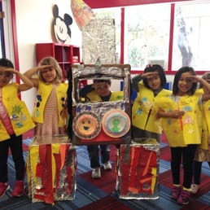

About Us
San Gabriel/Rosemead & Pasadena Child Development Center
The Administration, Director and Staff of Kids Klub welcome you, your family and your child to our San Gabriel/Rosemead and Pasadena child development centers, places of discovery, learning and fun. Kids Klub is dedicated to providing quality childcare and meeting the needs of your family. Kids Klub employs a staff that is devoted to the education and well being of your child in an environment that is safe, clean and stimulating. We know that the experiences you and your child have while at Kids Klub will be superb!
Mission Statement
To be the premier child development center by: Introducing children to a WORLD OF DISCOVERY and diversity that fosters learning through fun, hands-on, age appropriate experiences, which creates a strong foundation for academic success.
Providing a QUALITY ENVIRONMENT that is safe and clean where enthusiastic teaching professionals take pride in creating a loving, nurturing atmosphere for growth.
Forming a STRONG PARTNERSHIP between families and caregivers through communication, flexibility and compassion that results in meeting the needs of both children and parents.
Promoting a SENSE OF COMMUNITY through unique programs and special events that enrich the lives of our families and staff.
Kids Klub is peace of mind.